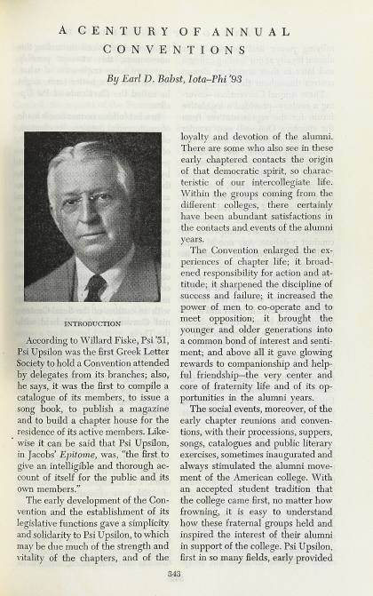

Archives /
Annals of Psi Upsilon / Annals, Part 3 - A Century of Annual Conventions
Annals of Psi Upsilon
Annals, Part 3 - A Century of Annual Conventions
348 pages
397 MB
1941

Download the PDF All of Annals of Psi Upsilon- CollectionAnnals of Psi Upsilon
- Year1941
- Pages348
- File size397 MB
- Words of text177,022
- FormatPDF, scanned
- TextOCR, searchable
- On psiu.orgsource page
Read this volume here, a page at a time.
The scan stays on psiu.org — only the pages you actually turn to are downloaded, so a 397 MB volume opens in a moment.
Search inside this volume
Finds every page of this volume that mentions your words, then jumps the reader there.